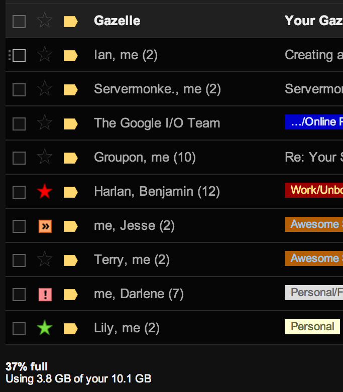
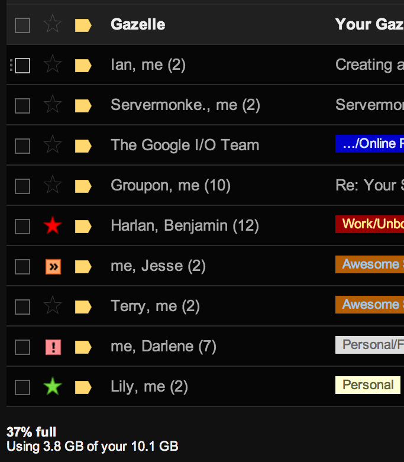
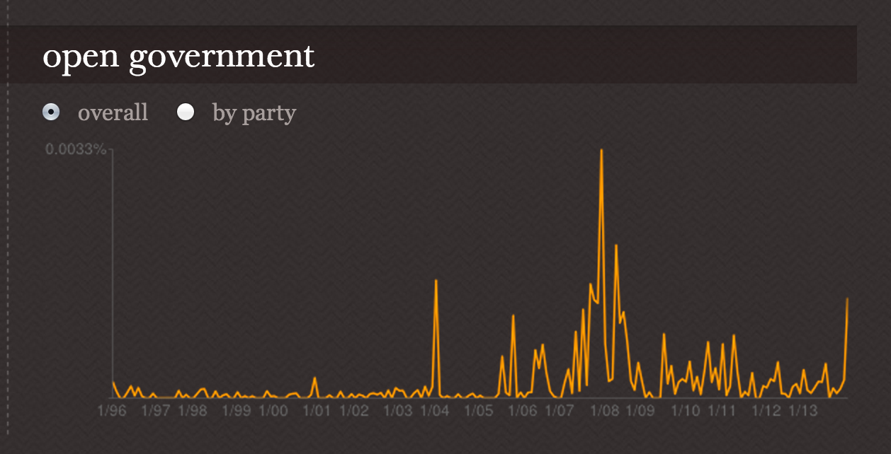
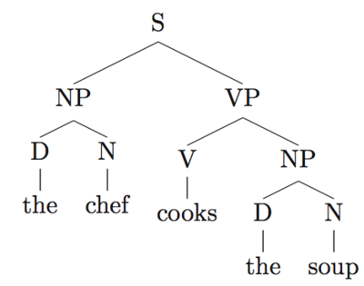

NLP and Big Data
Using NLTK and Hadoop
NLP needs Big Data
The science that has been developed around the facts of language passed through three stages before finding its true and unique object. First something called "grammar" was studied. This study, initiated by the Greeks and continued mainly by the French, was based on logic. It lacked a scientific approach and was detached from language itself. Its only aim was to give rules for distinguishing between correct and incorrect forms; it was a normative discipline, far removed from actual observation, and its scope was limited.
-- Ferdinand de Saussure
NLP needs Big Data
Using Hadoop with NLTK
- Computational Lingusitics methodologies are stochastic
- Examples are easier to create than rules
- Rules and Logic miss frequency and language dynamics
- Humans use lots of data for the same task- It's AI!
- More data is better - relevance is in the long tail
- If you don't have enough data - hire a knowledge engineer
Big Data will need NLP
 

{kind=link}
{kind=link}
Big Data will need NLP
Using NLTK with Hadoop
- Hadoop is great at massive amounts of text data
- However, current methods aren't really NLP
- Indexing, Co-Occurrence, even N-Gram Modeling is search
- We haven't exhausted frequency analysis yet
- But when we do, we're going to want semantic analyses
Domain Knowledge is IMPORTANT


- Stochastic methods are not universal
- Domain specific training sets and knowledge required
Capitol Words
{kind=link}
The Foo of Big Data
Given a large data set and domain specific knowledge:
- Form hypothesis (a data product)
- Mix in NLP techniques and machine learning tools
- Perform computation and test hypothesis
- Add to data set and domain knowledge
- Repeat
We have a wealth of data and can iterate rapidly!
Why NLTK?
{kind=link}
- It's not Stanford
- It's Open Source (the price is right)
- The blessing (and curse) of choice
- It lets you use your domain knowledge (it forces you to)
- Out of the box NLP
Why Hadoop?
{kind=link}
- Silly question at a Big Data talk?
- Who doesn't have a distribution? Intel has one!
- NLP is embarrassingly parallel, perfect for Map Reduce.
- You've got a cluster in your closet.
{kind=link}
The beginning of a startup's seven node cluster, total cost less than $1500

Hadoop is Java and NLTK is Python, how to make them play?
Comic Attribution: askrahul.com
Hadoop Streaming
- Supply any executable to Hadoop as the mapper or reducer
- Key Value pairs read from
stdinand pushed tostdout - All Hadoopy-ness still exists, only the mapper and reducer get to be replaced
mapper.py
#!/usr/bin/env python
import sys
from nltk.tokenize import wordpunct_tokenize
def read_input(file):
for line in file:
# split the line into tokens
yield wordpunct_tokenize(line)
def main(separator='\t'):
# input comes from STDIN (standard input)
data = read_input(sys.stdin)
for tokens in data:
# write the results to STDOUT (standard output);
# what we output here will be the input for the
# Reduce step, i.e. the input for reducer.py
#
# tab-delimited; the trivial token count is 1
for token in tokens:
print '%s%s%d' % (word, separator, 1)
if __name__ == "__main__":
main()reducer.py
#!/usr/bin/env python
from itertools import groupby
from operator import itemgetter
import sys
def read_mapper_output(file, separator='\t'):
for line in file:
yield line.rstrip().split(separator, 1)
def main(separator='\t'):
# input comes from STDIN (standard input)
data = read_mapper_output(sys.stdin, separator=separator)
# groupby groups multiple word-count pairs by word,
# and creates an iterator that returns consecutive keys and their group:
# current_word - string containing a word (the key)
# group - iterator yielding all ["<current_word>", "<count>"] items
for current_word, group in groupby(data, itemgetter(0)):
try:
total_count = sum(int(count) for current_word, count in group)
print "%s%s%d" % (current_word, separator, total_count)
except ValueError:
# count was not a number, so silently discard this item
pass
if __name__ == "__main__":
main()Running the Job
hduser@ubuntu:/usr/local/hadoop$ bin/hadoop jar contrib/streaming/hadoop-*streaming*.jar \
-file /home/hduser/mapper.py -mapper /home/hduser/mapper.py \
-file /home/hduser/reducer.py -reducer /home/hduser/reducer.py \
-input /user/hduser/gutenberg/* -output /user/hduser/gutenberg-outputImportant Notes
- An Interpreter is loaded for every job (no multiprocessing)
- NLTK data loading only happens ONCE!
- Use generators to save on memory
- Libraries exist for quickly creating tools (Dumbo)
{kind=link}
On to NLP/Big Data Nuts and Bolts
Does Hadoop really do native tokenization?
{kind=link}
- Word count is your first Hadoop program
- (sometimes also called segmentation or chunking)
- Not as simple as splitting on punctuation and whitespace
- Different NLP tasks require different kinds of tokenization
You're not going to the U.S.A. in that super-zeppelin, Dr. Stoddard?
Preprocessing Unstructured Text
{kind=link}
- Hadoop stores output as it's own file
- Map/Reduce jobs are now essentially built-in preprocessors
- Last-mile computation can be done in 100GB of Memory
- Hadoop is best for a series of jobs that transform data to something machine tractable
- In NLP this means: text → tokenized → tagged → parsed → Treebank
The NLTK Preprocessing Toolkit
{kind=link}
Apparently this tool is used in space!
Breaking the strings with NLTK:
Tokenization
- Punkt Sentence Tokenizer (segmenter)
- Punkt Word Tokenizer (language vars)
- Punkt uses unsupervised model for abbreviation words, collocations, sentence start- must be trained
- Regexp (rule based tokenizer)
- Text Tiling - detects subtopic shifts based on lexical co-occurence
- Treebank tokenizer
Understanding Syntactic Class
Tagging
- From simple tokenization to a better understanding of the syntactic role of the tokens.
- Tagging is another stochastic process.
- Lexical decision making - most likely tag for a word.
- Trigram Tagger - chooses tags based on preceeding two tokens' tags
- BrillTagger - transformational rule-based tagger
- Hidden Markov Model Tagger - a generative model
Discovering Structure
Parsing
{kind=link}
- Parsing requires knowledge: a context free grammar
- Probabalistic CFGs add ambiguity detection and correction
- Dynamic Programming Algorithms
- Chart Parser: Adds edges to a chart (Earley and Feature)
- Viterbi Parser: "Most Likely Constituent Table"
The final result of preprocessing
Treebanks
{kind=link}
- Treebanks can be human-annotated or -reviewed to create better training sets
- Annotated treebanks can be the basis for all previous stochastic mechanisms
Hadoop and Preprocessing
- All the previous steps are well suited to Map Reduce
- NLP is embarrassingly parallel
- Mappers operate on preprocessed text at all levels
- Reducers use document ids to generate intermediary stages
Pro Tips

- Reusable tasks for generating domain-specific knowledge
- NLTK Trainer loads from Pickled Data
- We generated tag data sets, lexicons, PCFGs
- 10-fold training/test/validation on your corpus
- Did I mention NLTK has built in NER?
nltk.ne_chunk
Meaning (semantics)

Syntatic guessing is not the final frontier of stochastic NLP
Create machine-tractable text meaning representations
Comic from SpeedBump.com
Text Meaning Representations
- Language-neutral representation of a language unit
- A series of connected frames representing knowledge
- Requires Ontologies/Taxonomies large knowledge bases
- Allows deep querying of text content
Lightweight Semantic Documents -- WIMs

- Limited, but important set of relations
- Lightweight processing using available knowledge
- Creates a traversable graph of the content
- Open Source!
Quick Recap
- NLP needs Big Data
- Big Data will need NLP
- Domain Knowledge + Data Set = Foo!
- NLTK & Hadoop good for preprocessing & stochastic tasks
- Hadoop may not be the best for large scale TMR graphing